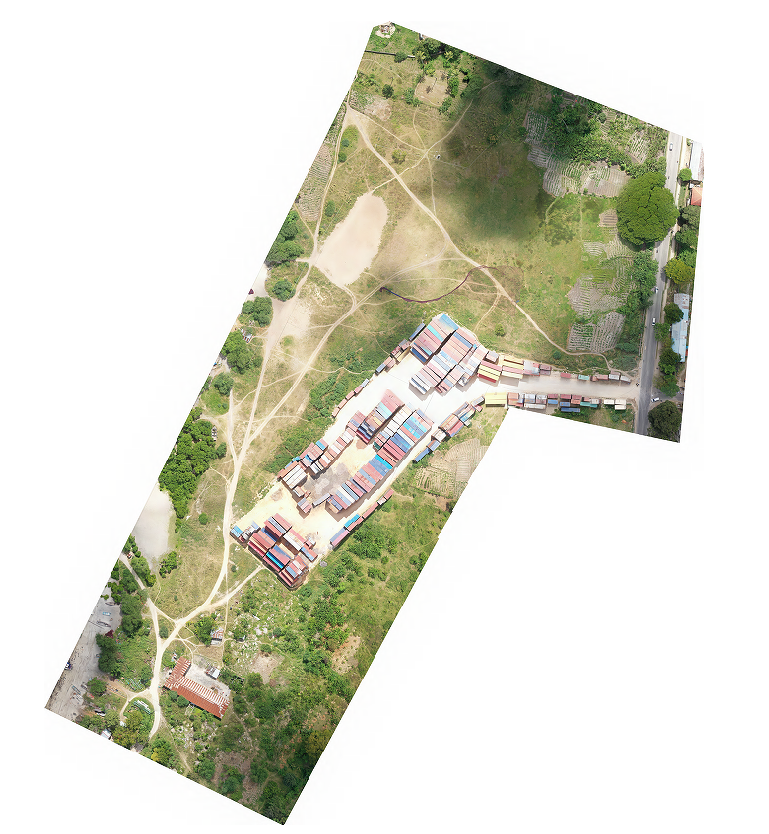
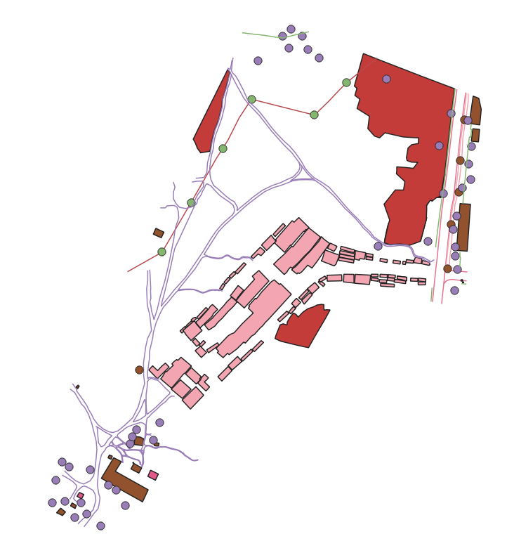
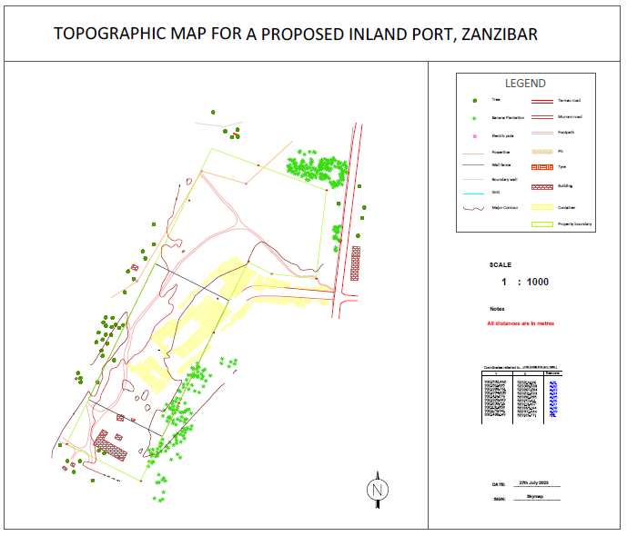

The project involved conducting a detailed topographic survey to support the planning and preliminary design of a proposed port in Maruhubi, Zanzibar. The survey
combined UAV-based photogrammetry and ground-based surveying.
Workflow
- Established ground control points (GCPs) across the project area using GNSS-RTK to ensure accurate georeferencing of aerial imagery.
- Performed a detailed topographic survey using a total station to collect ground points, breaklines and key infrastructure features.
- Processed aerial imagery in Agisft Metashape to generate a dense point cloud and orthomosaic.
- Generated a Digital Elevation Model (DEM) and digitized additional site features from the orthomosaic to capture elements not observed during the ground survey.
- Compiled total station data, digitized features, elevation contours in AutoCAD to produce the final topographic drawings.
Tools & Technologies
Output


